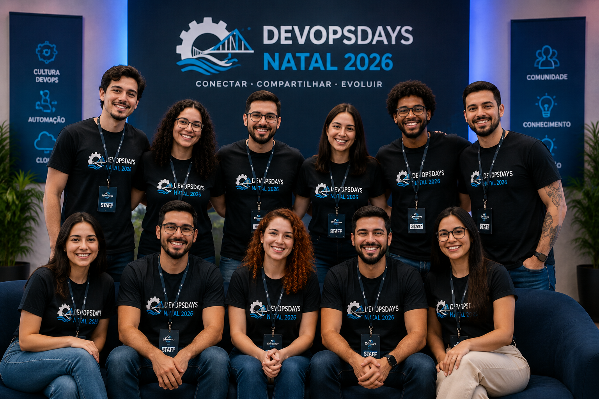
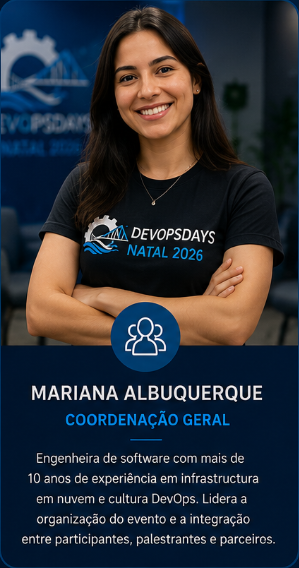
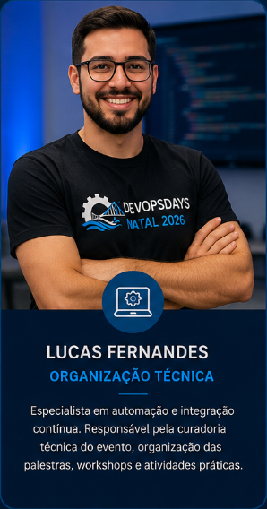
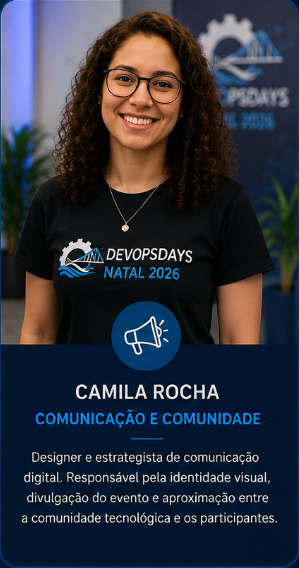

Nossa equipe

O DevOpsDays Natal conta com uma equipe formada por voluntários, estudantes e profissionais da área de tecnologia que trabalham juntos para oferecer a melhor experiência possível aos participantes. A equipe atua em diferentes setores, como recepção, suporte técnico, produção audiovisual, organização das atividades e atendimento ao público, garantindo que todas as etapas do evento ocorram de forma organizada, acolhedora e eficiente.
Nossos Coordenadores


